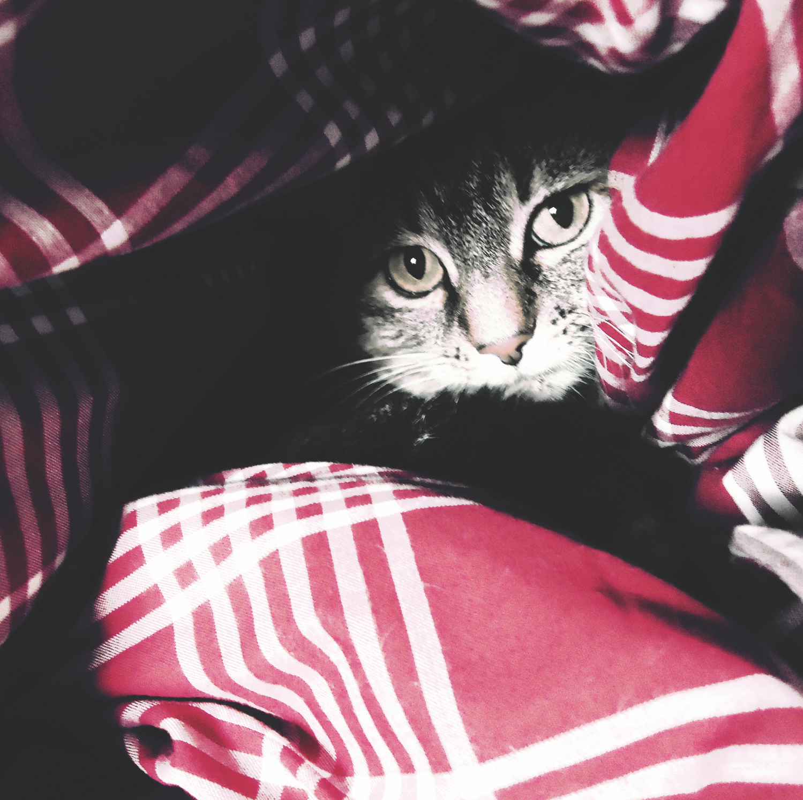
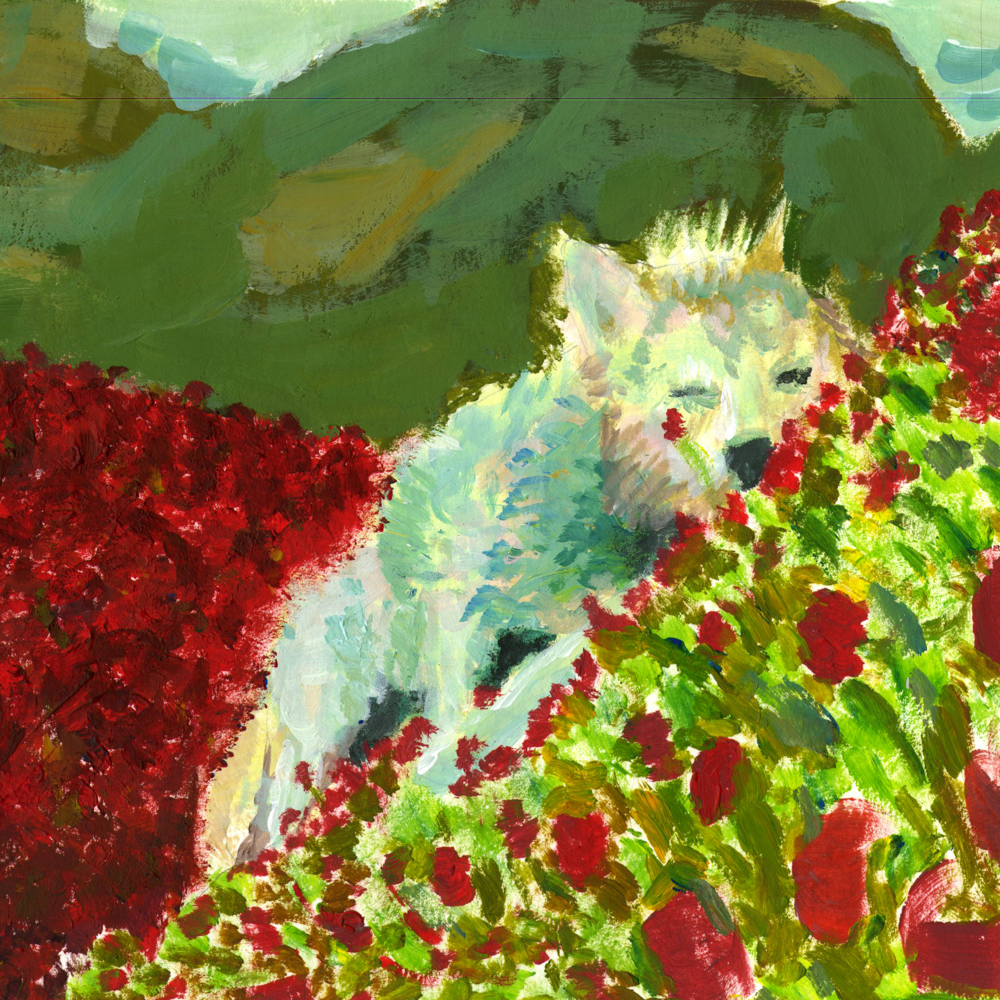
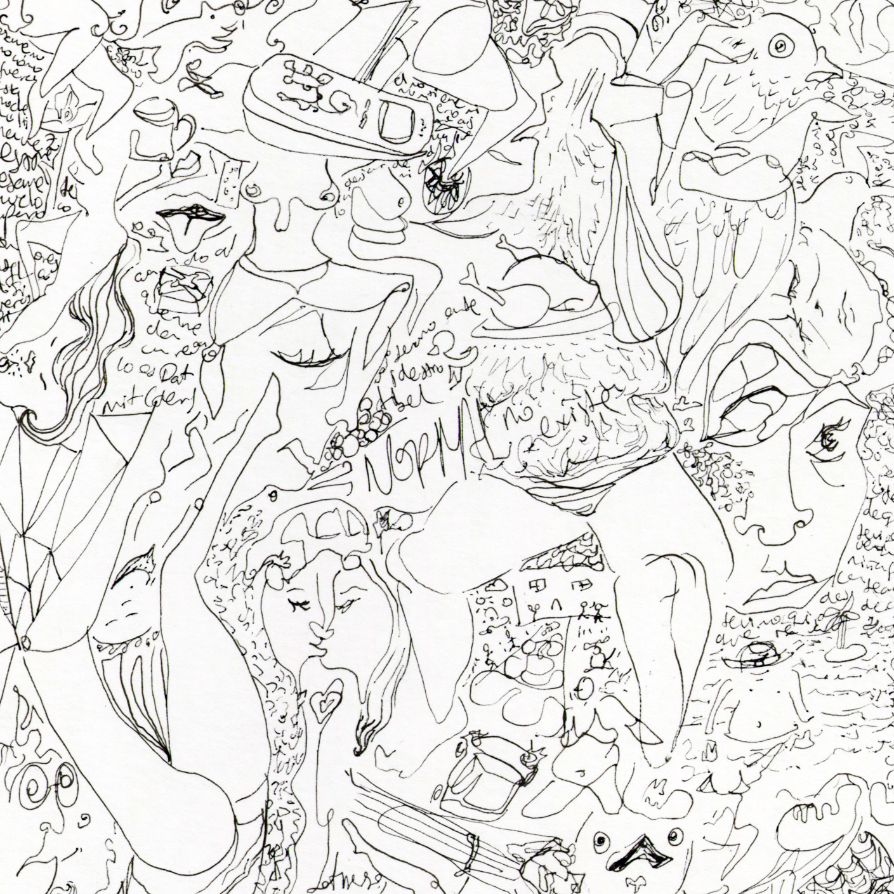
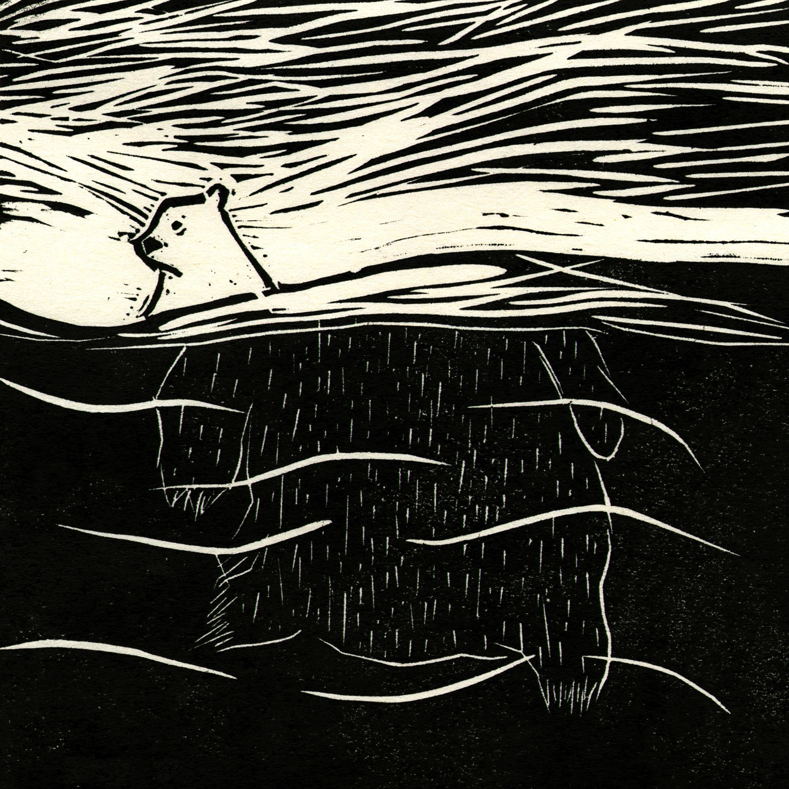
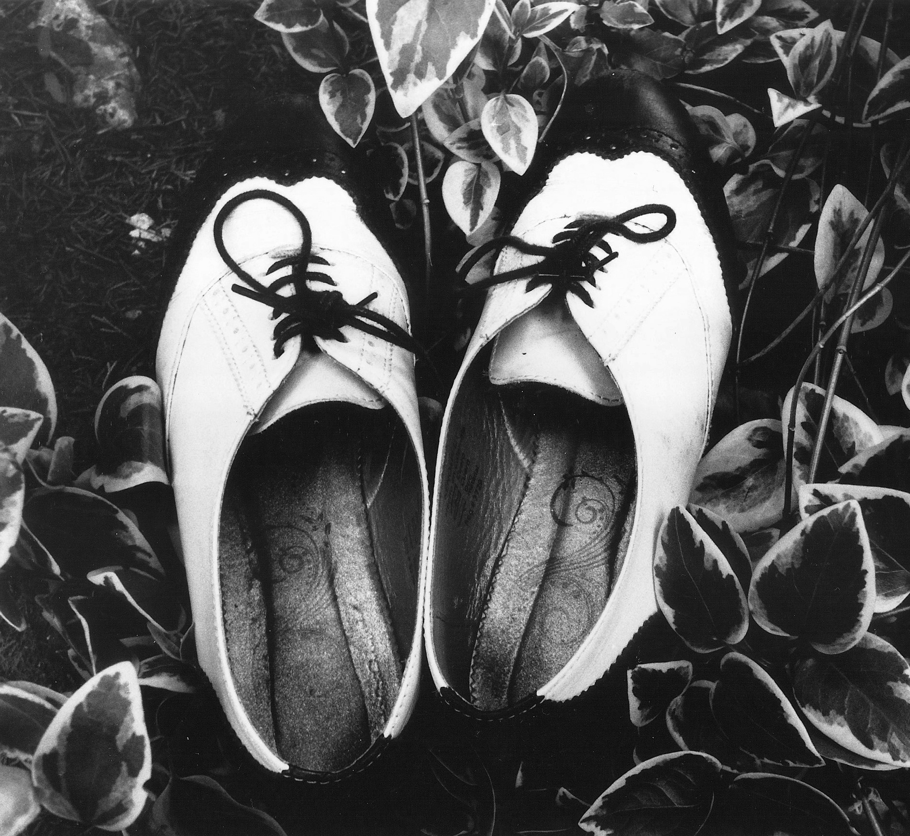
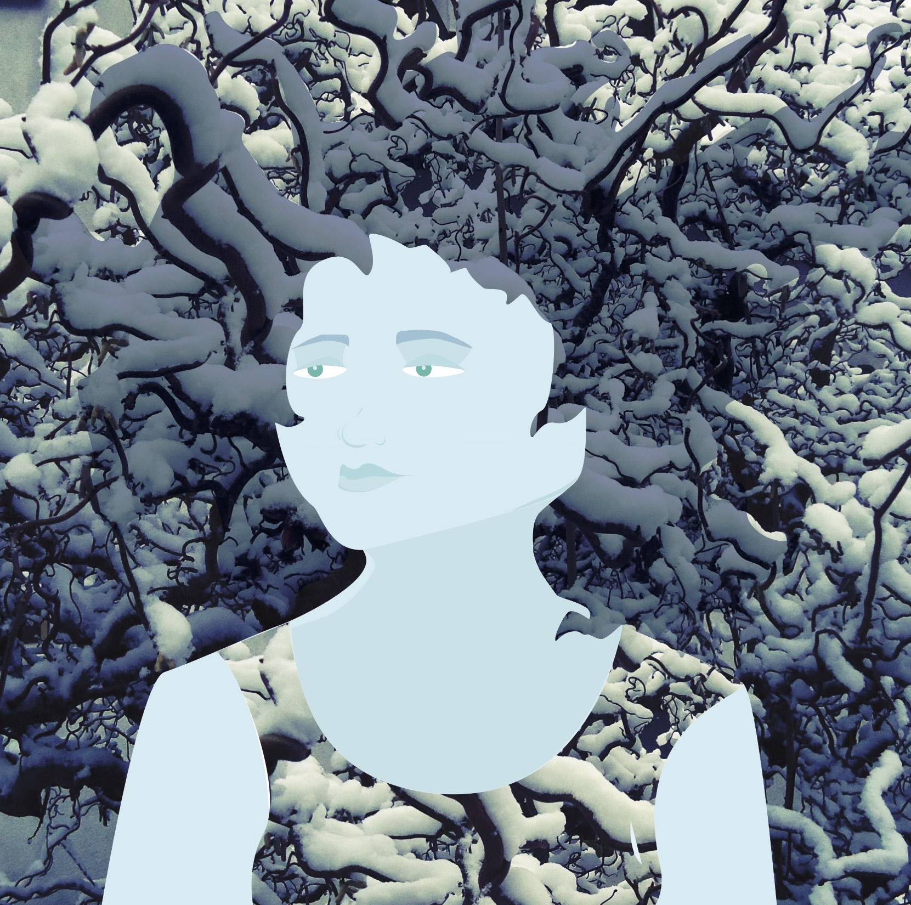
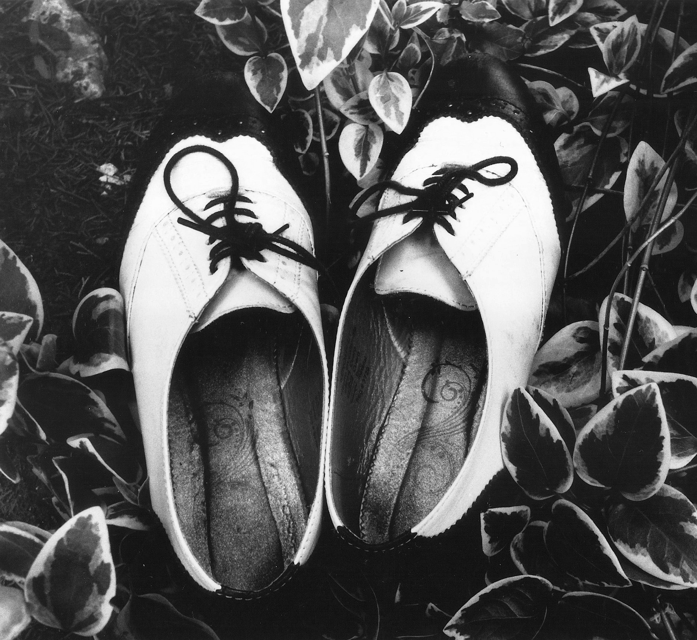
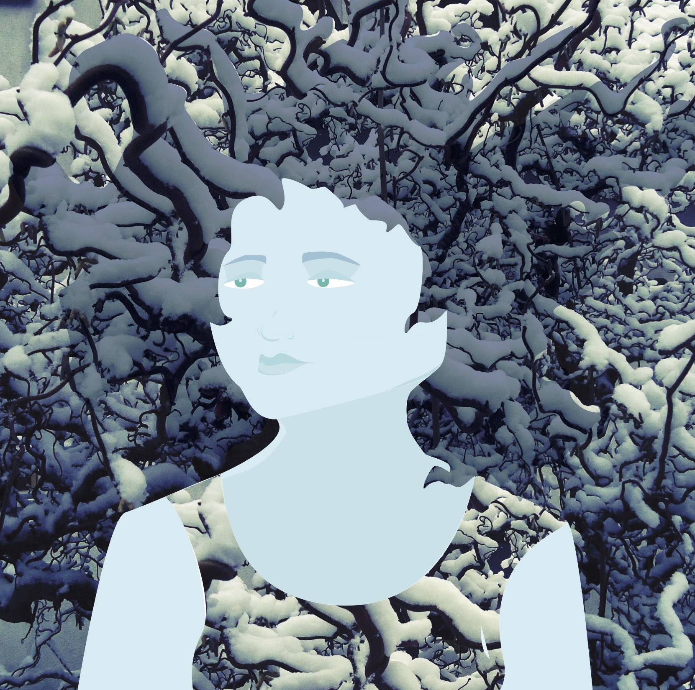
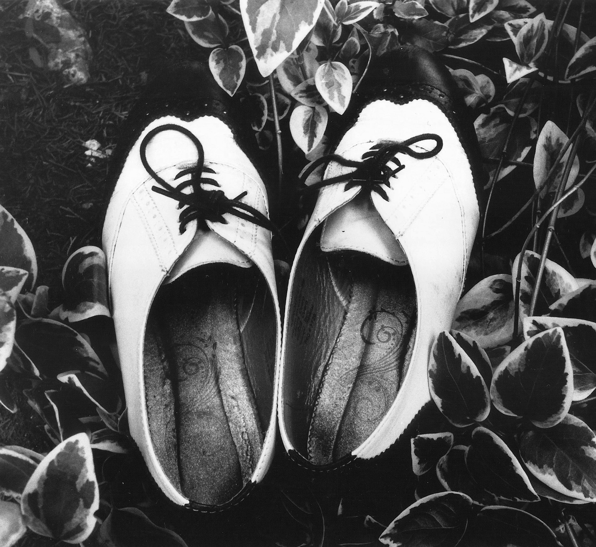
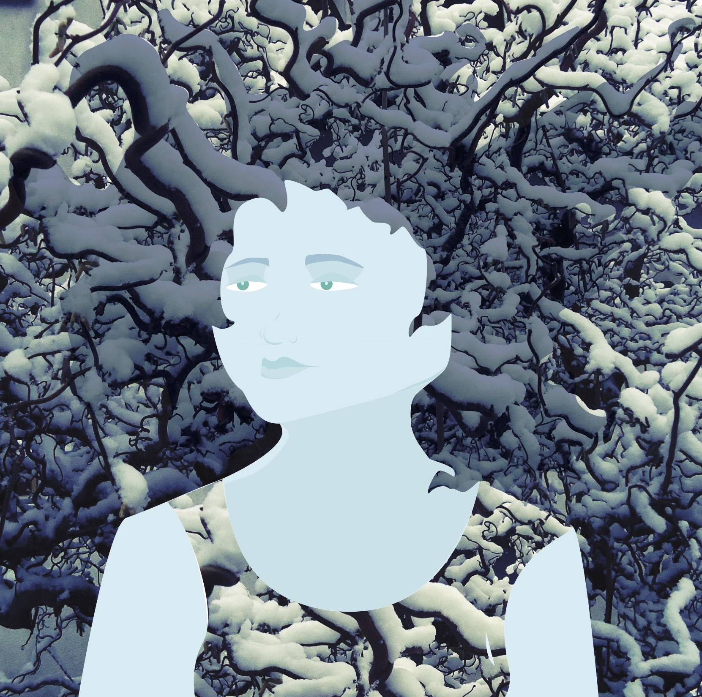

Galeria
    



Laura Castro
Artista visual con enfásis gráfico. Sabe un poco de alemán, varios procedimientos de la
fotografía Análoga y maneja herramientas de Adobe como InDesgin e Illustrator. Los temas en sus proyectos los
aborda usualmente desde la cotidianidad, es parte del colectivo Eh avemaría! con quienes participó en varias
ferias artesanales, entre ellas la del mercado de pulgas San Alejo los domingos.

